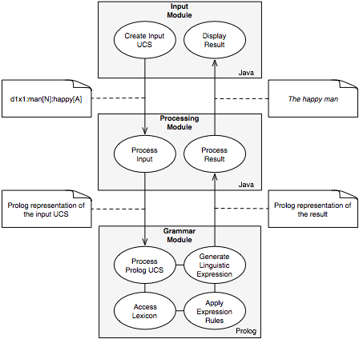

Sourceforge Project Site (forum and other infrastructure)
Paper: Overview and goals of the system (2007)
Poster about the system (presented at ICFG-12, Brazil, 2006)
A modular language generator based on the theory of Functional Grammar by Simon C. Dik (FG), implemented using Java for the user interface and input processing, ANTLR for the input format parser and Prolog for the grammar and lexicon module, treating underlying linguistic structure and lexical entries as domain-specific languages.

The program uses a Swing-based Java GUI or a JSP-based web interface to enter an abstract representation of the expression to generate, called an underlying clause structure (UCS). The format of that UCS is defined as an ANTLR grammar, from which a parser for the input format is generated.
The input UCS is parsed by that parser and transformed into an internal Java object representation. Using the object representation of the parsed UCS, a Prolog representation of the desired structure is written to a file, which is then used by the Prolog grammar module to generate the actual linguistic expression, which is finally displayed in the GUI (see figure).
The reason for using Java for the user interface and processing of the UCS on the one hand and Prolog for the expression rules and the lexicon on the other hand stems from the idea of using implementation languages well suited for a particular task. Java is a widespread multi-purpose programming language with abundant supply of libraries, while Prolog offers convenient notation and processing mechanisms, is familiar to many linguists and has a particular strong standing as an implementation language for FG.
By using an input format based on the representation used in the theory of FG the system can be used to evaluate and improve the theory of Functional Grammar with respect to theoretical and representational issues in language generation. By means of the modular architecture consisting of exchangable modules for entering a UCS, transforming the UCS and using the transformed representation to generate the linguistic expression this program could act as a language generation or input processing module in other FG-based NLP systems.
Through the modular architecture and in particular the usage of a parser generator like ANTLR, the system can be extended for different input formats. Experimental ANTLR v3 grammar files for Functional Discourse Grammar (FDG) representations on the Representational Level and the Interpersonal Level can be found in the project repository.
The lexicon and grammar component originates from a dialog-based Prolog-only implementation developed since 1989 by Paul O. Samuelsdorff, later with Christoph Benden, at the Department of Linguistics, University of Cologne, of which the latest version is included.

This site was created on 2006-05-24 and last updated on
2007-10-06 by
Fabian Steeg
Linguistic Information
Processing - Department
of Linguistics - University of
Cologne